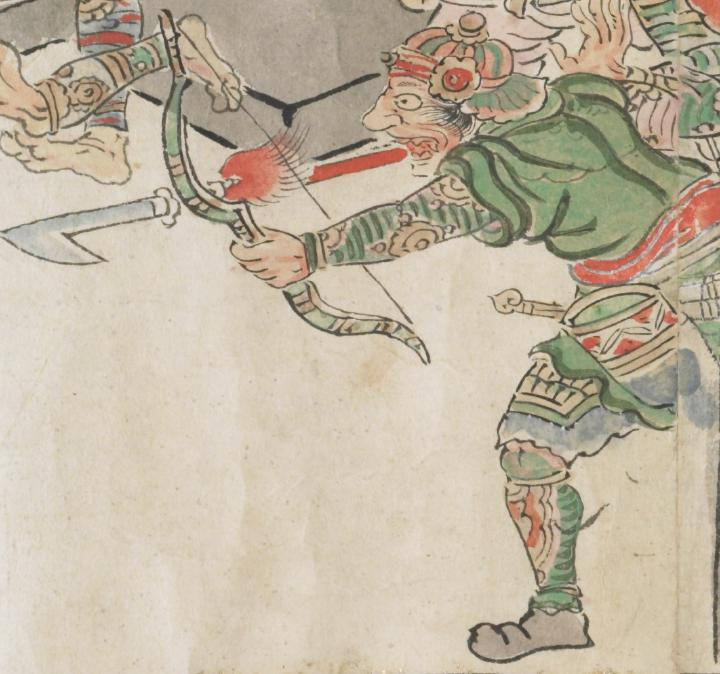

弓を持つ鬼。重厚な鎧を身につけている。頭には兜をかぶり、緑色の衣服を着ている。矢を打ったあとのようにも見える。
出典：親書誌：U426_nichibunken_0079：酒天童子絵巻；シュテンドウジエマキ／日付：2006／資源識別子：U426_nichibunken_0079_0014_0004
Copyright (c)2010- International Research Center for Japanese Studies, Kyoto, Japan. All rights reserved.